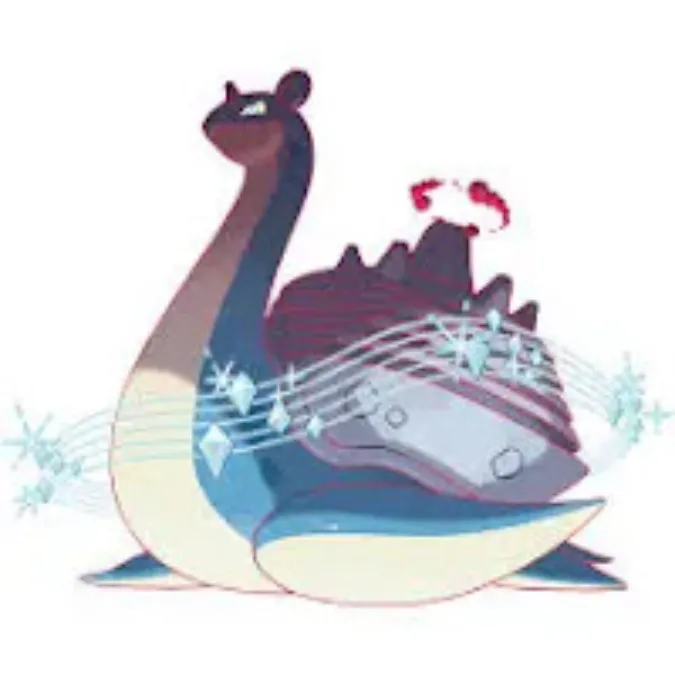

Quick facts
Species: Lapras (Gigantamax)
Types: Water / Ice
Primary weaknesses: Electric, Grass, Fighting, Rock
Recommended lobby: 18–20 trainers
Gigantamax Lapras is a Water/Ice-type raid boss in Pokémon GO with a massive CP and powerful moves. Its unique typing gives it major vulnerabilities to Electric and Fighting-type attacks, making those counters essential for defeating it efficiently.
This guide covers everything you need to know to beat Gigantamax Lapras, including best counters, weaknesses, movesets, CP ranges, weather boosts, shiny availability, and expert raid strategies for both beginners and experienced trainers.
Raid Boss: Gigantamax Lapras
Type: Water / Ice
Raid Tier: Gigantamax Raid
Major Weakness: Electric, Fighting

Gigantamax Lapras is one of the most iconic raid bosses in Pokémon GO. With its dual Water and Ice typing, it has high durability and access to strong moves like Ice Beam and Surf, making it a threat to many raid teams.
However, trainers can exploit its weaknesses to Electric and Fighting-type moves to defeat it faster. Using the right counters and strategies can make this raid manageable even for smaller groups of high-level players.
In this guide, you’ll learn how to maximize your chances against Gigantamax Lapras, including optimal counters, CP ranges, shiny encounters, and practical raid strategies.
Gigantamax Lapras is an Ice / Water-type Pokémon introduced in Pokémon Sword & Shield. Its Gigantamax form enhances its bulk and provides the unique move G-Max Resonance, which sets up a dual Aurora Veil — protecting your team from both physical and special attacks.
In Pokémon GO, Gigantamax Lapras functions similarly to a bulky raid boss with access to strong Ice-type moves, making it a formidable foe for unprepared trainers.
| Category | Details |
|---|---|
| Weak to |
 Electric • Electric •
 Grass • Grass •
 Fighting • Fighting •
 Rock Rock
|
| Resists |
 Fire • Fire •
 Water • Water •
 Ice • Ice •
 Steel Steel
|
| Notes | Gigantamax bosses have large HP pools and often use Max/G-Max moves with battlefield effects. Expect longer fights and coordinate Revives/Max Revives. |
Pro tip: Use Electric and Rock-type Pokémon for maximum damage. Avoid Ice and Water-types—they won’t dent Lapras’ defenses.
Gigantamax Lapras is Ice/Water-type raid boss. It is weak to Electric , Grass, Fighting and Rock moves. During Max Battles, your goal is to maximize Electric-type Gigantamax damage during the Max Phase.
| Pokémon | Fast Moves | Gigantamax Moves | Charged Moves | Elite Moves | Best Moves |
|---|---|---|---|---|---|
| Gigantamax Toxtricity | Spark, Poison Jab, Acid | G-Max Stun Shock | Discharge, Wild Charge, Acid Spray, Power Up Punch | - | Poison Jab(13) and G-Max Stun Shock(350) |
|
|||||
| Gigantamax Pikachu | Spark, Poison Jab, Acid | G-Max Stun Shock | Discharge, Wild Charge, Acid Spray, Power Up Punch | - | Poison Jab(13) and G-Max Stun Shock(350) |
|
|||||
| Pokémon | Fast Moves | Gigantamax Moves | Charged Moves | Elite Moves | Best Moves |
|---|---|---|---|---|---|
| Gigantamax Machamp | Bullet Punch, Counter | G-Max Chi Strike | Cross Chop, Rock Slide, Close Combat, Dynamic Punch, Heavy Slam | Karate Chop, Stone Edge, Submission, Payback | Counter(13) and G-Max Chi Strike(350) |
|
|||||
| Gigantamax Coalossal | Smack Down, Incinerate | G-Max Volcalith | Rock Slide, Flame Charge, Rock Blast | - | Incinerate(32) and G-Max Volcalith(350) |
|
|||||
| Pokémon | Fast Moves | Gigantamax Moves | Charged Moves | Elite Moves | Best Moves |
|---|---|---|---|---|---|
| Gigantamax Rillaboom | Razor Leaf, Scratch | G-Max Drum Solo | Grass Knot, Energy Ball, Earth Power | - | Razor Leaf(13) and G-Max Drum Solo(350) |
|
|||||
| Gigantamax Flapple | Dragon Breath, Bullet Seed | G-Max Tartness | Seed Bomb, Dragon Pulse, Outrage, Fly | - | Bullet Seed(7) and G-Max Tartness(350) |
| Gigantamax Venusaur | Vine Whip, Razor Leaf | G-Max Vine Lash | Sludge, Petal Blizzard, Sludge Bomb, Solar Beam | Frenzy Plant | Razor Leaf(13) and G-Max Vine Lash(350) |
| Gigantamax Appletun | Astonish, Bullet Seed | G-Max Sweetness | Seed Bomb, Dragon Pulse, Energy Ball, Outrage | Yawn | Astonish / Bullet Seed(7) and G-Max Sweetness(350) |
| Gigantamax Gengar | Sucker Punch, Shadow Claw, Hex | G-Max Terror | Shadow Ball, Sludge Bomb, Focus Blast, Drain Punch | Lick, Dark Pulse, Shadow Punch, Sludge Wave, Psychic | Hex(8) and G-Max Terror(350) |
| Gigantamax Duraludon | Metal Claw, Dragon Tail | G-Max Depletion | Hyper Beam, Flash Cannon, Dragon Claw | - | Dragon Tail(14) and G-Max Depletion(350) |
| Gigantamax Cinderace | Tackle, Fire Spin | G-Max Fireball | Flamethrower, Flame Charge, Focus Blast | - | Fire Spin(13) and G-Max Fireball(350) |
| Gigantamax Hatterene | Psycho Cut, Confusion, Charm | G-Max Smite | Psyshock, Dazzling Gleam, Psychic, Power Whip | - | Charm(20) and G-Max Smite(350) |
| Pokémon | Dynamax Moves | Fast Moves | Charged Moves | Elite Moves | |
|---|---|---|---|---|---|
| Dynamax Zapdos | Max Lightning | Charge Beam | Zap Cannon, Thunder, Thunderbolt, Ancient Power, Drill Peck | Thunder Shock | |
|
|||||
| Dynamax Raikou | Max Lightning | Thunder Shock, Volt Switch | Shadow Ball, Thunder, Thunderbolt, Wild Charge, Aura Sphere | - | |
|
|||||
| Dynamax Gigalith | Max Quake, Max Rockfall | Mud Slap, Smack Down | Rock Slide, Solar Beam, Superpower, Heavy Slam | Meteor Beam | |
| Dynamax Jolteon | Max Lightning | Thunder Shock, Volt Switch | Discharge, Thunderbolt, Thunder | Last Resort, Zap Cannon | |
| Dynamax Toxtricity | Max Lightning, Max Ooze | Acid, Spark, Poison Jab | Acid Spray, Discharge, Wild Charge, Power-Up Punch | - | |
| Pokémon | Fast Moves | Gigantamax Moves | Charged Moves | Elite Moves | Best Moves |
|---|---|---|---|---|---|
| Dynamax Machamp | Max Knuckle, Max Steelspike | Bullet Punch, Counter | Heavy Slam, Dynamic Punch, Close Combat, Rock Slide, Cross Chop | Karate Chop, Stone Edge, Submission, Payback | |
|
|||||
| Dynamax Alakazam | Max Mindstorm, Max Knuckle, Max Guard, Max Spirit | Confusion, Psycho Cut | Focus Blast, Future Sight, Shadow Ball, Fire Punch | Dazzling Gleam, Psychic, Counter | |
| Dynamax Hitmonlee | Max Knuckle | Rock Smash, Low Kick, Double Kick | Low Sweep, Stone Edge, Close Combat, Blaze Kick | Stomp, Brick Break | |
|
|||||
| Dynamax Passimian | Max Knuckle, Max Strike | Counter, Rock Smash, Take Down | Brick Break, Close Combat, Superpower, Brutal Swing, Drain Punch | - | |
| Dynamax Omastar | Max Quake, Max Geyser, Max Rockfall | Mud Shot, Water Gun | Ancient Power, Hydro Pump, Rock Blast | Rock Throw, Rock Slide | |
| Dynamax Falinks | Max Knuckle | Rock Smash, Counter | Superpower, Brick Break, Megahorn | - | |
| Dynamax Kabutops | Max Knuckle, Max Quake, Max Geyser, Max Flutterby | Rock Smash, Mud Shot, Waterfall | Ancient Power, Stone Edge, Water Pulse | Fury Cutter | |
| Dynamax Gardevoir | Max Mindstorm, Max Starfall, Max Lightning, Max Overgrowth | Confusion, Charge Beam, Charm, Magical Leaf | Psychic, Dazzling Gleam, Shadow Ball, Triple Axel | Synchronoise | |
| Pokémon | Fast Moves | Gigantamax Moves | Charged Moves | Elite Moves | Best Moves |
|---|---|---|---|---|---|
| Dynamax Urshifu | Max Geyser, Max Knuckle | Rock Smash, Counter, Waterfall | Brick Break, Dynamic Punch, Close Combat, Aqua Jet | - | |
| Dynamax Gallade | Max Mindstorm, Max Knucle, Max Starfall | Confusion, Low Kick, Psycho Cut, Charm | Close Combat, Psychic, Leaf Blade | Synchronoise | |
| Dynamax Tsareena | Max Overgrowth, Max Starfall | Charm, Magical Leaf, Razor Leaf | Draining Kiss, Grass Knot, Stomp, Triple Axel, Energy Ball | High Jump Kick | |
| Dynamax Rillaboom | Max Overgrowth, Max Strike | Scratch, Razor Leaf | Energy Ball, Grass Knot, Earth Power | - | |
| Eternatus | Dynamax Cannon | Dragon Tail, Poison Jab | Sludge Bomb, Dragon Pulse, Flamethrower | - | |
| Dynamax Leafeon | Max Overgrowth | Quick Attack, Razor Leaf | Solar Beam, Leaf Blade, Energy Ball | Bullet Seed, Last Resort | |
| Zacian | Behemoth Blade | Metal Claw, Air Slash | Play Rough, Giga Impact, Close Combat | - | |
| Dynamax Venusaur | Max Overgrowth | Razor Leaf, Vine Whip | Petal Blizzard, Sludge Bomb, Solar Beam, Sludge | Frenzy Plant | |
| Dynamax Hitmonchan | Max Steelspike | Counter , Bullet Puch | Close Combat, Power-Up Punch, Fire Punch, Thunder Punch, Ice Punch | Rock Smash, Brick Break |
Lapras common fast moves are Frost Breath or Water Gun or Psyqave. Charged moves include Blizzard or Sparkling Aria or Skull Bash or Hydro Pump and Surf. Elite moves include Ice Shard or Ice Beam and Dragon Pulse. G-Max Resonance not only delivers heavy damage but also leaves a damaging area for a short time — timing your swaps and using at least one bulky support reduces wipe risk.
Threat: Ice Beam / Blizzard – can severely damage Grass-types. Surf / Hydro Pump – powerful Water-type STAB moves. Frost Breath – consistent fast damage
Tip: Dodge Blizzard and Hydro Pump for survival, focus on high-DPS counters..
Rainy weather : boosts Water damage. Snow weather : boosts Grass damage. Snow weather : boosts Ice attackers.
If Lapras opens with Ice Beam/Blizzard, avoid fragile Grass counters and switch to Electric or Fighting attackers. Keep some shields to block heavy charged moves and bring Revives/Potions for quick swaps during extended fights.
Recommended: 15–20 trainers for comfortable clears with mixed player levels. With many Gigantamax / Dynamax counters, 10–14 can work. Under 8 trainers should be attempted only if all participants are high-level and coordinated with ideal counters and Dynamax/G-Max boosts.
Reasons include Pokédex entry, strong Water / Ice attacker, shiny chance, and XL Candy farming.
Avoid using fragile Ice and Water attackers against Lapras when it knows Ice Beam or Blizzard — they'll faint quickly. Also be cautious with Grass counters if Lapras uses a heavy Ice charged move; swap out when necessary.
After defeating Gigantamax Lapras in a raid, players have the chance to encounter a Shiny Lapras. While the Gigantamax form itself cannot be caught, the normal Lapras that appears post-raid can be shiny.
Shiny Lapras has a distinct purple-blue color compared to the regular blue version, making it highly desirable for collectors.
The chance of encountering a shiny Pokémon in raids is higher than in wild encounters, so participating in multiple raids increases your odds.
Lapras is a Water / Ice type. It is weak to Electric, Grass, Fighting, Rock type moves.
Gigantamax Lapras uses the special move G-Max Resonance. This Ice-type attack deals damage and can freeze opponents, slowing them in Max Raid Battles.
Yes, but in certain events.
Yes — standard raid catch mechanics apply.
It has high HP and decent defenses, but using Electric or Grass-type counters makes the battle much easier and faster.
Gigantamax Lapras forms massive waves around itself and creates a visually stunning battlefield effect, making it both powerful and iconic in Max Raid Battles.
Gigantamax Lapras is a mechanically interesting raid boss: its Water/Ice combo is predictable, but the G-Max residual damage forces teams to plan for survivability, not just pure DPS. Prioritize Fire and Flying Gigantamax picks, add Dynamax support for sustained windows, and include at least one high-TDO tank if your lobby is smaller. With the counters and tactics above, you’ll clear Lapras efficiently and maximize your rewards.